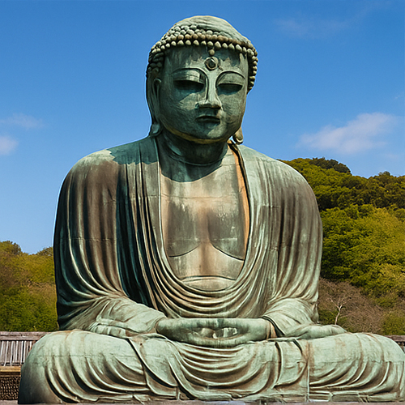

Kamakura Daibutsu – Il Grande Buddha di Kamakura
Uno dei monumenti più iconici e venerati del Giappone, il Kamakura Daibutsu (鎌倉大仏) si erge con fierezza a 13,35 metri d’altezza, osservando pacificamente l’antica città costiera di Kamakura. Questa maestosa statua in bronzo del Buddha Amida veglia da secoli su pellegrini e viaggiatori, incarnando serenità, forza e lo spirito del buddhismo giapponese.
Un Testimone di Fede e Maestria Artigianale
Costruito a metà del XIII secolo, intorno al 1252, il Kamakura Daibutsu era originariamente ospitato in una grande sala in legno. Tuttavia, ripetuti tifoni e tsunami distrussero la struttura — ma la statua rimase, affrontando gli elementi sotto il cielo aperto per oltre 500 anni. Questa resilienza lo ha reso un potente simbolo di impermanenza e illuminazione nella filosofia Zen.
Design e Scala che Ispirano Meraviglia
Fusa in bronzo con tecniche avanzate del periodo Kamakura, la statua pesa circa 121 tonnellate ed è cava all’interno, permettendo ai visitatori di entrare nel cuore del Buddha. L’espressione serena del volto, le mani giunte e le vesti fluide sono scolpite con maestria, trasmettendo pace e presenza divina.
Kamakura: Dove la Natura Incontra la Storia
Situato presso il Tempio Kōtoku-in, il Kamakura Daibutsu è immerso tra colline boscose e vicino al mare, rendendolo una meta perfetta per la riflessione spirituale e la bellezza naturale. È una gita giornaliera popolare da Tokyo, che offre ai visitatori un'opportunità per fuggire dal trambusto della città e camminare sui sentieri antichi un tempo percorsi da samurai e monaci.
Informazioni per i Visitatori
- 🌸 Luogo: Tempio Kotoku-in, Kamakura, Prefettura di Kanagawa
- 🌸 Orari: 8:00 – 17:30 (chiusura alle 17:00 da ottobre a marzo)
- 🌸 Ingresso: ¥300 (supplemento di ¥20 per entrare all'interno della statua)
- 🌸 Accesso: 10 minuti a piedi dalla stazione Hase (Linea Enoden)
Perché Visitare il Kamakura Daibutsu?
Il Kamakura Daibutsu è più di una semplice statua — è un'esperienza. Che tu sia attratto dal suo significato storico, dalla sua bellezza artistica o dalla sua aura spirituale, stare ai piedi di questo colosso buddhista è davvero un momento toccante. Aggiungi Kamakura al tuo itinerario in Giappone e senti la potenza silenziosa di uno dei grandi monumenti religiosi del mondo.
Tag: Kamakura Daibutsu, Grande Buddha Giappone, Statua buddhista Kamakura, Gita da Tokyo, Templi storici Giappone, Cosa vedere a Kamakura, Buddha Amida bronzo, Cultura giapponese
Stai pianificando una visita al Kamakura Daibutsu?
Per vivere un'esperienza davvero immersiva e ricca di significato, ti consigliamo di prenotare una guida privata certificata del nostro team. Tutte le nostre guide sono professionisti con licenza ufficiale riconosciuta dal governo giapponese e offrono tour personalizzati in base ai tuoi interessi. Contatta in anticipo la guida da te scelta per confermare la disponibilità e ricevere assistenza esperta per il tuo viaggio.